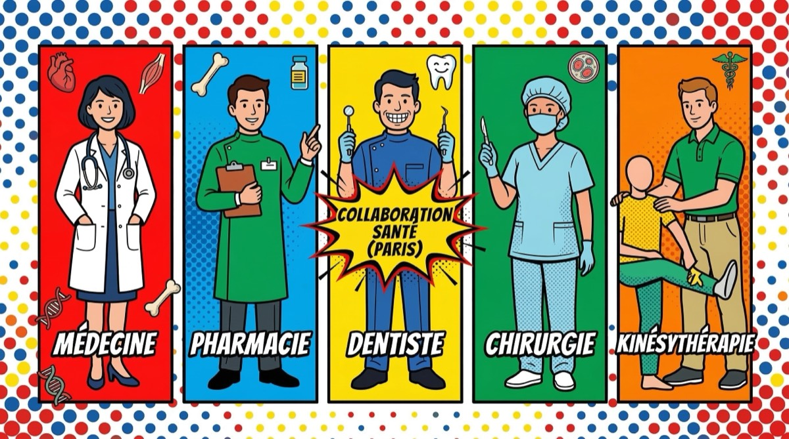

Orientation Les débouchés des études de santé : toutes les filières MMOPK 15 février 2026Par l'équipe AFEM  Quand on parle d'études de santé, on pense souvent uniquement à « devenir médecin ». Mais le PASS et le LAS ouvrent en réalité les portes de 5 filières différentes, regroupées sous l'acronyme MMOPK : Médecine, Maïeutique, Odontologie, Pharmacie et Kinésithérapie. Chacune de ces filières mène à des métiers passionnants et variés. On te présente tout. Médecine : le parcours le plus long, mais le plus diversifié C'est la filière la plus demandée. Les études de médecine durent entre 9 et 12 ans selon la spécialité choisie : 1re année : PASS ou LAS (sélection) 2e et 3e année : DFGSM — formation de base en sciences médicales + premiers stages hospitaliers 4e à 6e année : DFASM — externat avec stages et gardes à l'hôpital + préparation des EDN (Épreuves Dématérialisées Nationales) À partir de la 7e année : internat dans ta spécialité (3 à 6 ans selon la filière) Au total, il existe plus de 40 spécialités médicales : médecine générale, chirurgie, pédiatrie, psychiatrie, dermatologie, cardiologie, anesthésie-réanimation… La médecine, c'est le parcours le plus long, mais aussi celui qui offre le plus de diversité. Peu de métiers te permettent d'exercer dans autant de domaines différents. Maïeutique : sage-femme, un métier médical à part entière La maïeutique forme les sages-femmes (oui, le terme s'applique aussi aux hommes). C'est une profession médicale à part entière, pas paramédicale. Les études durent 5 ans : 1re année : PASS ou LAS 2e à 5e année : formation en école de maïeutique (cours + stages en maternité, gynécologie, néonatologie) Les sages-femmes assurent le suivi de la grossesse, l'accouchement, le post-partum, la contraception et la prévention gynécologique. Elles peuvent exercer en hôpital, en clinique ou en libéral. Depuis 2021, les compétences des sages-femmes ont été élargies. Elles peuvent désormais prescrire des arrêts maladie et réaliser certains dépistages. Odontologie : les études dentaires L'odontologie forme les chirurgiens-dentistes. Les études durent 6 à 9 ans : 1re année : PASS ou LAS 2e et 3e année : formation préclinique (anatomie dentaire, matériaux, prothèse sur mannequin) 4e et 5e année : clinique — tu soignes de vrais patients sous supervision 6e année : thèse d'exercice pour le cycle court, ou poursuite vers un cycle long (3 ans supplémentaires) Les spécialisations possibles : orthodontie, chirurgie orale, médecine bucco-dentaire. Tu peux exercer en libéral (cabinet privé), en hôpital ou en centre de santé. Pharmacie : bien plus que la pharmacie de quartier Les études de pharmacie durent 6 à 9 ans et ouvrent sur des débouchés très variés : Officine : le pharmacien de quartier. Tu délivres les médicaments, conseilles les patients, gères ton officine. Industrie pharmaceutique : recherche et développement, affaires réglementaires, production, marketing. Les labos recrutent beaucoup de pharmaciens. Pharmacie hospitalière : tu gères la pharmacie de l'hôpital, prépares les chimiothérapies, participes aux comités thérapeutiques. Biologie médicale : tu analyses les prélèvements (sang, urine, biopsies) en laboratoire. Recherche : thèse de sciences et carrière académique. La pharmacie est probablement la filière MMOPK la plus sous-estimée. Les débouchés sont extrêmement diversifiés, de l'officine à l'industrie en passant par l'hôpital. Kinésithérapie : le soin par le mouvement La kinésithérapie est accessible via le PASS ou le LAS dans certaines facs (pas toutes, vérifie pour ta fac). Les études durent 5 ans : 1re année : PASS ou LAS (sélection) 2e à 5e année : formation en IFMK (Institut de Formation en Masso-Kinésithérapie) — anatomie, biomécanique, rééducation + stages cliniques Les kinésithérapeutes travaillent dans de nombreux domaines : Sport : rééducation des sportifs, préparation physique Respiratoire : kinésithérapie respiratoire, notamment en pédiatrie Neurologie : rééducation après AVC, Parkinson, sclérose en plaques Libéral : cabinet privé, la majorité des kinés exercent en libéral Et après un échec en PASS/LAS ? Ne pas passer le cap de la première année n'est pas une fin en soi. Plusieurs options s'offrent à toi : Tenter le LAS : si tu étais en PASS, tu peux te réorienter en LAS et retenter l'accès santé en L2 ou L3. Les passerelles : après une licence ou un master dans un autre domaine, tu peux candidater directement en 2e ou 3e année de médecine via les passerelles. Continuer ta licence : si tu étais en LAS, tu continues ta licence normalement et tu peux retenter l'accès santé les années suivantes. Autres formations paramédicales : infirmier, orthophoniste, ergothérapeute, psychomotricien… De nombreuses formations de santé sont accessibles sans PASS/LAS. Un échec en PASS/LAS ne signifie pas la fin de tes ambitions dans la santé. Les passerelles et les alternatives sont nombreuses. Pour savoir quelle voie te correspond le mieux, fais notre Quizz x Fac Calculateur de réussite Articles similaires Orientation Comment choisir sa fac de médecine en 2026 ? Taux de réussite, localisation, accompagnement... Les critères essentiels pour faire le bon choix. PASS/LAS PASS ou LAS : comment choisir le bon parcours ? PASS et LAS offrent deux voies d'accès aux études de santé. Quelles sont les différences ?
Orientation Comment choisir sa fac de médecine en 2026 ? Taux de réussite, localisation, accompagnement... Les critères essentiels pour faire le bon choix.
PASS/LAS PASS ou LAS : comment choisir le bon parcours ? PASS et LAS offrent deux voies d'accès aux études de santé. Quelles sont les différences ?